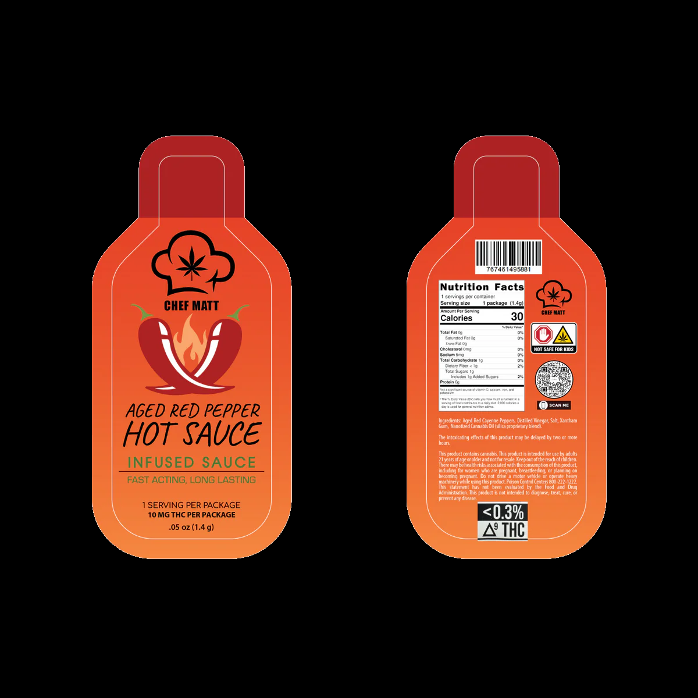
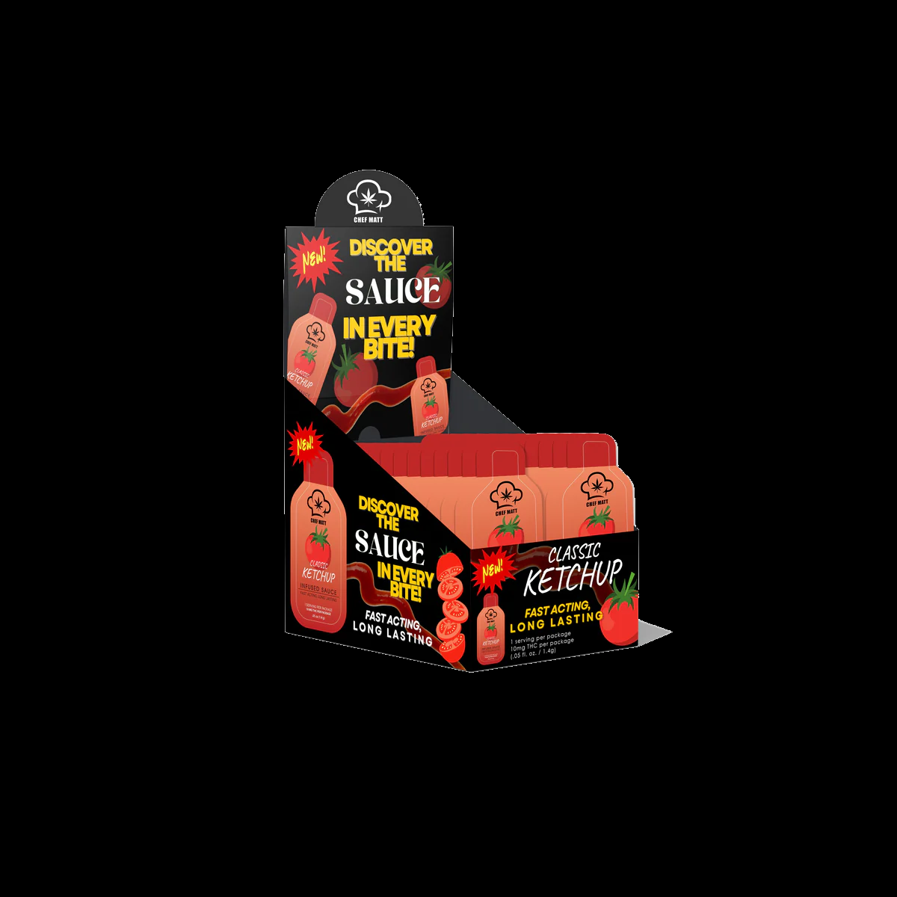
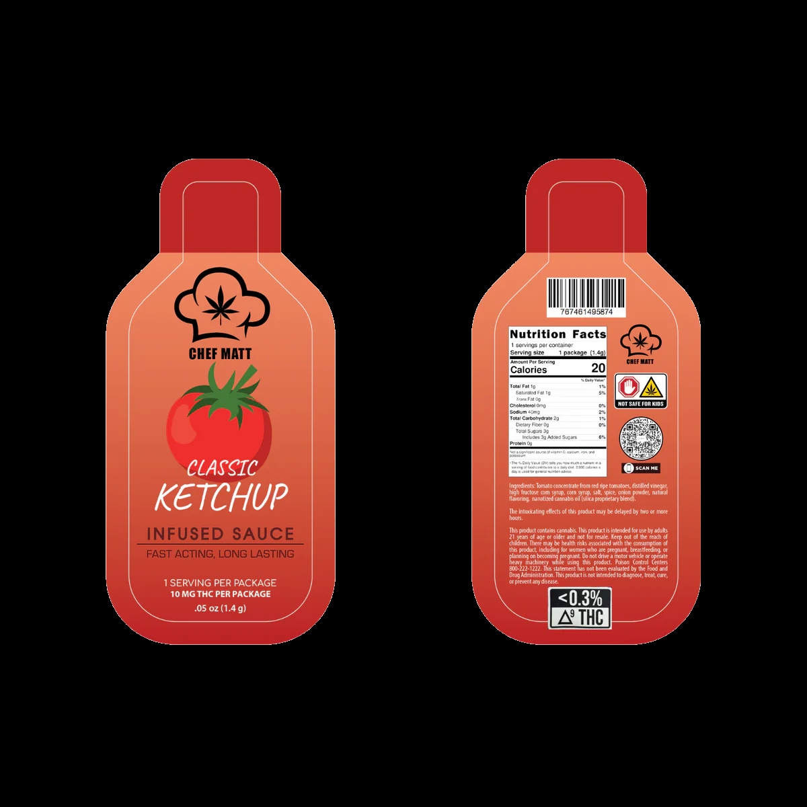

Chef Matt Crafted Aged Red Pepper Hot Sauce
Current

Candidate

1010577 edge-connected white pixels replaced. Review before uploading.
Chef Matt Crafted Classic Ketchup 25 Pack
Current

Candidate

864215 edge-connected white pixels replaced. Review before uploading.
Chef Matt Crafted Classic Ketchup
Current

Candidate

1016466 edge-connected white pixels replaced. Review before uploading.